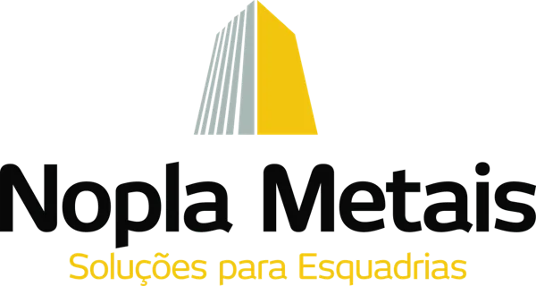
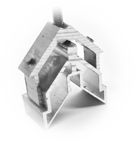
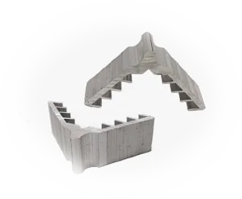
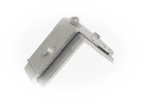
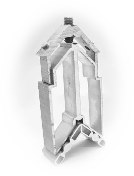

Cantos firmes e esquadria montada mais rápido. Cada conexão Nopla passa por teste interno antes de chegar à sua bancada, e atende as principais linhas de perfis do mercado, inclusive tubos.





Solicite uma amostra montada ou agende uma visita técnica na sua empresa.